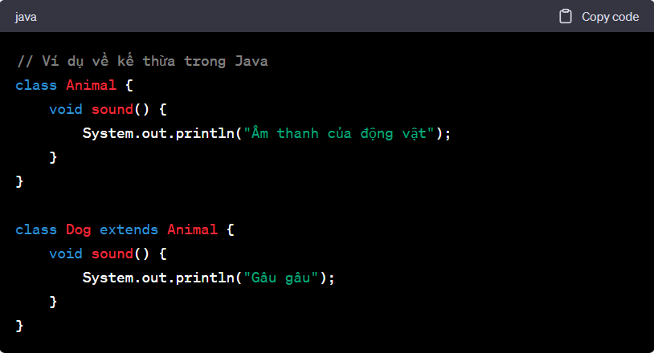
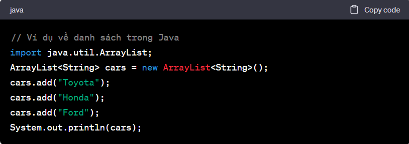

1. Giới Thiệu về Java
Java là một ngôn ngữ lập trình đa nhiệm, đối tượng và được sử dụng rộng rãi. Nó được dùng trong việc phát triển ứng dụng web, ứng dụng di động, ứng dụng máy tính và nhiều lĩnh vực công nghệ khác. Trong blog này, chúng tôi sẽ giới thiệu về lịch sử của Java và tại sao nó là một ngôn ngữ lập trình quan trọng. Bằng cách sử dụng CSS, người phát triển web có thể tách biệt nội dung và kiểu dáng, giúp dễ dàng quản lý, cập nhật và duy trì trang web mà không làm thay đổi cấu trúc HTML của trang. CSS giúp tối ưu hóa trải nghiệm người dùng bằng cách tạo ra các giao diện trang web thẩm mỹ và dễ đọc.Tìm hiểu về CSS
2. Các Chủ Đề Quan Trọng trong Java
a. Lập Trình Hướng Đối Tượng (OOP) trong Java
Lập trình hướng đối tượng là một khía cạnh quan trọng của Java. Chúng tôi sẽ giúp bạn hiểu về các khái niệm như lớp, đối tượng, kế thừa, và đa hình.
b. Java Collections Framework
Collections Framework cung cấp các cấu trúc dữ liệu và các thuật toán cho việc lưu trữ và xử lý dữ liệu. Chúng tôi sẽ hướng dẫn về danh sách, bản đồ, hàng đợi và các cấu trúc dữ liệu khác.c. Java Servlets và JSP
Chúng tôi sẽ giới thiệu về việc phát triển ứng dụng web Java bằng cách sử dụng Java Servlets và JavaServer Pages (JSP). Đây là một phần quan trọng của việc phát triển các ứng dụng web động.